1. Bootcamp의 정의
YABOAZ에서 Bootcamp는 단순 교육이나 시연 행사가 아닙니다. 고객, 현장 사용자, FDE, 개발자, 승인자, 의사결정자가 함께 MVP를 실제 시나리오로 테스트하고 데이터를 수집하며 개선 우선순위를 결정하는 압축 검증 실험입니다.
Bootcamp는 MVP를 보여주는 자리가 아니라, 현장 실행 가능성을 입증하는 자리입니다.
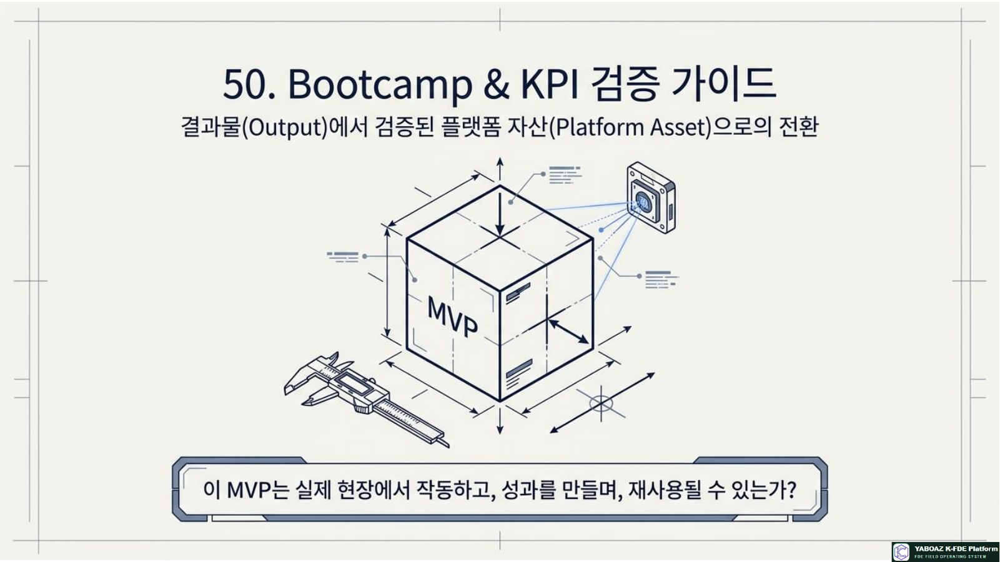
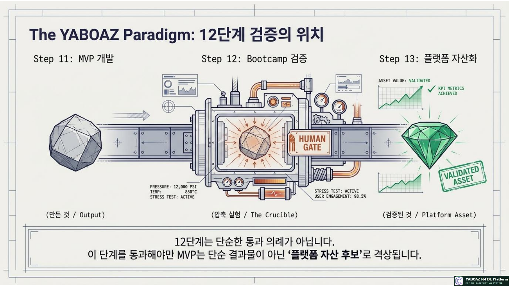
2. 12단계의 위치와 핵심 산출물
12단계는 “만든 것”을 “검증된 것”으로 바꾸는 단계입니다. 이 단계를 통과해야 MVP가 다음 프로젝트에 적용할 플랫폼 자산 후보가 됩니다.
핵심 산출물
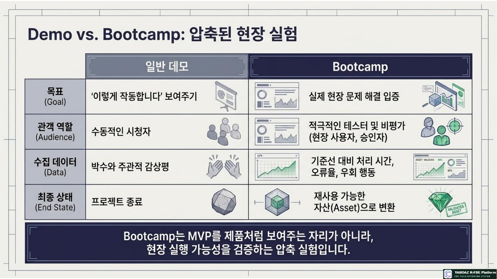
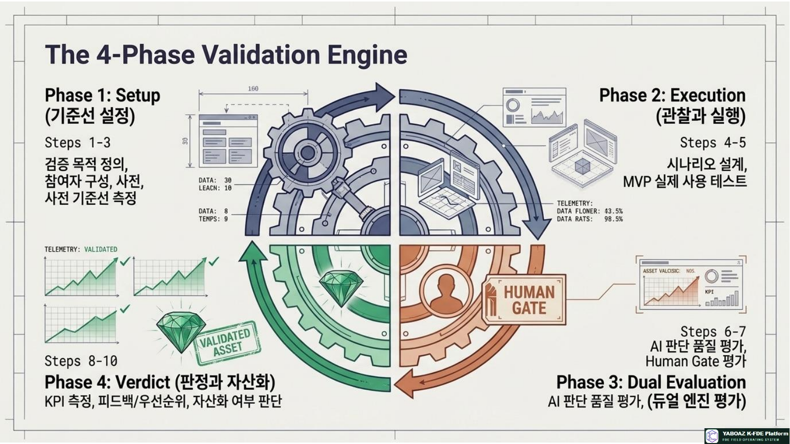
3. Bootcamp 검증 전체 흐름 10단계
검증 목적 정의
핵심 문제, 기존 방식 대비 개선, AI 품질, Human Gate, 예외와 통과 조건을 정합니다.
참여자와 역할 구성
고객 책임자·현장 사용자·승인자·데이터·시스템·FDE·개발자·평가자를 배치합니다.
사전 기준선 측정
기존 처리시간·판단시간·승인시간·오류·우회 업무·만족도를 측정합니다.
테스트 시나리오 설계
정상·예외·데이터 부족·승인 지연·실행 오류를 실제 업무 흐름으로 구성합니다.
MVP 사용 테스트
FDE는 설명자가 아니라 관찰자로 참여하고 사용자의 행동·질문·막힘을 기록합니다.
AI 판단 품질 평가
정확도·근거 명확성·신뢰도 적절성·일관성·보수성·예외 대응을 평가합니다.
Human Gate 평가
승인자·근거·선택지·승인 시간·대체 승인·책임 기록을 확인합니다.
KPI 측정
기준선과 MVP를 비교해 속도·품질·사용성·신뢰·운영·자산화 지표를 계산합니다.
피드백·개선 우선순위
기능·화면·데이터·AI·워크플로·정책·교육·자산화 후보로 분류합니다.
통과·자산화 판단
통과·조건부 통과·재검증·보류·실패를 판정하고 다음 조치를 확정합니다.
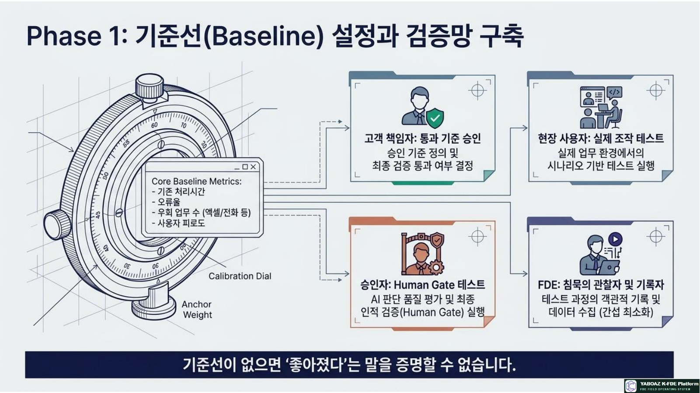
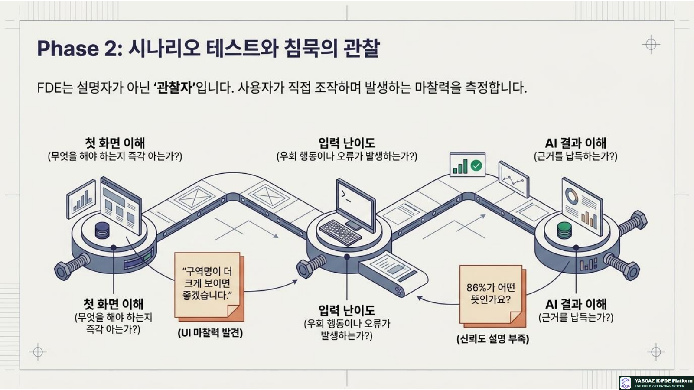
4. 기준선·참여자·테스트 시나리오
참여자와 역할
| 역할 | 책임 |
|---|---|
| 고객 책임자 | 검증 목적·통과 기준·최종 판정 승인 |
| 현장 사용자 | MVP 실제 사용·업무 피드백 |
| 승인자 | Human Gate 승인·반려·보류 테스트 |
| 데이터·시스템 담당자 | 데이터 정확성·연동·권한·오류 확인 |
| FDE | 관찰·기록·문제 구조화·개선 도출 |
| 개발자·평가자 | 오류 수정·KPI 측정·검증 보고 |
기준선 측정표
| KPI | 기존 방식 | 측정 방법 |
|---|---|---|
| 위험도 판단 시간 | 8분 | 시나리오 시작부터 판단 완료까지 |
| 승인 소요시간 | 5분 | 승인 요청부터 승인까지 |
| 위치 확인 시간 | 4분 | 로그·관찰 기록 |
| 보고서 작성시간 | 30분 | 업무 시작·제출 시각 |
| 오경보 처리 오류 | 월 3건 | 과거 이력 |
테스트 시나리오 표준
| 항목 | 내용 |
|---|---|
| 시나리오명·시작 조건 | 복수 센서 감지·7층 복도 60초 이내 감지 |
| 참여자·입력 데이터 | 안전관리자·센서·위치·주변 상태 |
| AI·Human Gate | 위험도 높음 추천·관리자 승인 |
| 기대 결과·KPI | 안내 초안·로그 저장·판단·승인 시간 |
| 실패 조건 | 근거 미표시·위치 오류·승인 로그 누락 |
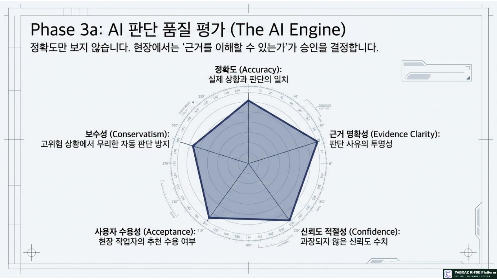
5. 사용자 관찰과 AI 판단 평가
사용자 관찰 항목
사용자 관찰 기록표
| 시간 | 사용자 행동 | 막힌 지점·발언 | 개선 |
|---|---|---|---|
| 10:05 | 이벤트 클릭 | “구역명이 더 크게 보이면 좋겠습니다.” | 위치 UI 개선 |
| 10:08 | AI 추천 확인 | “86%가 어떤 뜻인가요?” | 신뢰도 설명 |
| 10:10 | 승인 선택 | “근거가 보여서 승인하기 쉽습니다.” | 유지 |
AI 판단 평가
| 평가 항목 | 확인 질문 |
|---|---|
| 정확도·일관성 | 실제 상황과 맞고 같은 조건에서 일관적인가? |
| 근거·신뢰도 | Evidence와 규칙을 이해할 수 있고 과장되지 않는가? |
| 보수성 | 고위험 상황에서 무리한 자동 판단을 하지 않는가? |
| 예외 대응 | 데이터 부족·충돌이면 보류하고 사람에게 넘기는가? |
| 수정 가능성 | 사람이 쉽게 수정하고 결과가 기록되는가? |
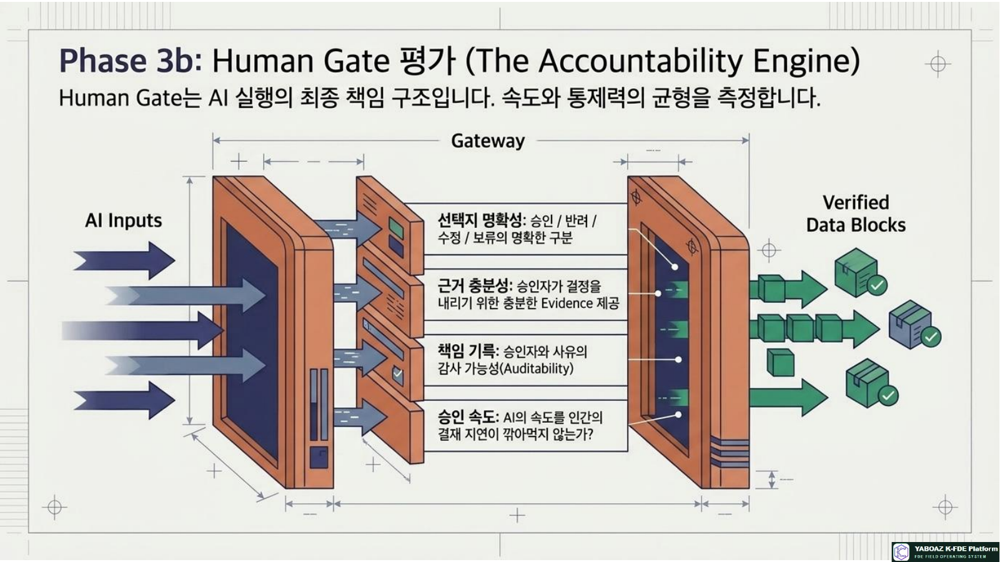
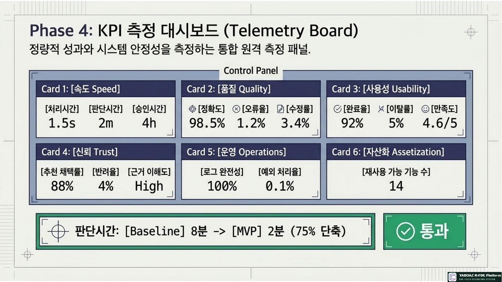
6. Human Gate·KPI 측정
Human Gate 평가표
| 항목 | 좋은 상태 | 개선 예시 |
|---|---|---|
| 승인자 명확성 | 누가 승인할지 즉시 확인 | 대체 승인자 표시 |
| 근거 충분성 | Evidence·규칙·신뢰도 확인 가능 | Evidence 링크 추가 |
| 선택지 명확성 | 승인·반려·수정·보류 구분 | 반려 사유 필수화 |
| 책임 기록 | 승인자·시각·사유 저장 | 감사 로그 검증 |
| 승인 속도 | 목표 시간 이내 처리 | 에스컬레이션 추가 |
KPI 측정표
| KPI | 기존 | MVP | 개선율 | 통과 기준 |
|---|---|---|---|---|
| 위험도 판단 시간 | 8분 | 2분 | 75% 단축 | 50% 이상 |
| 승인 소요시간 | 5분 | 2분 30초 | 50% 단축 | 30% 이상 |
| 추천 채택률 | 없음 | 80% | 신규 | 70% 이상 |
| 사용자 만족도 | 3.0 | 4.3 | 43% 향상 | 4.0 이상 |
| 오류율 | 10% | 4% | 60% 감소 | 5% 이하 |
필수 운영 KPI
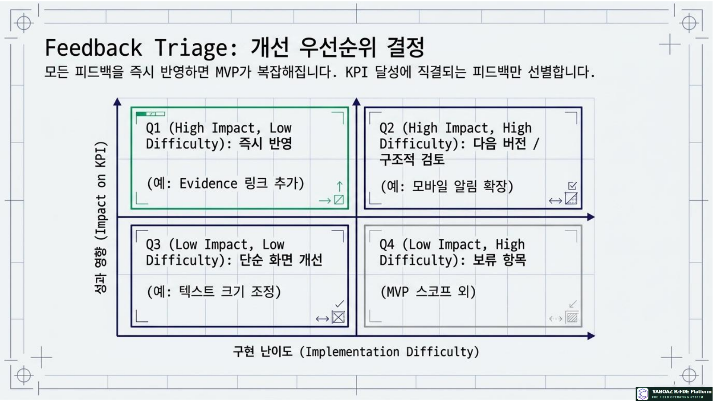
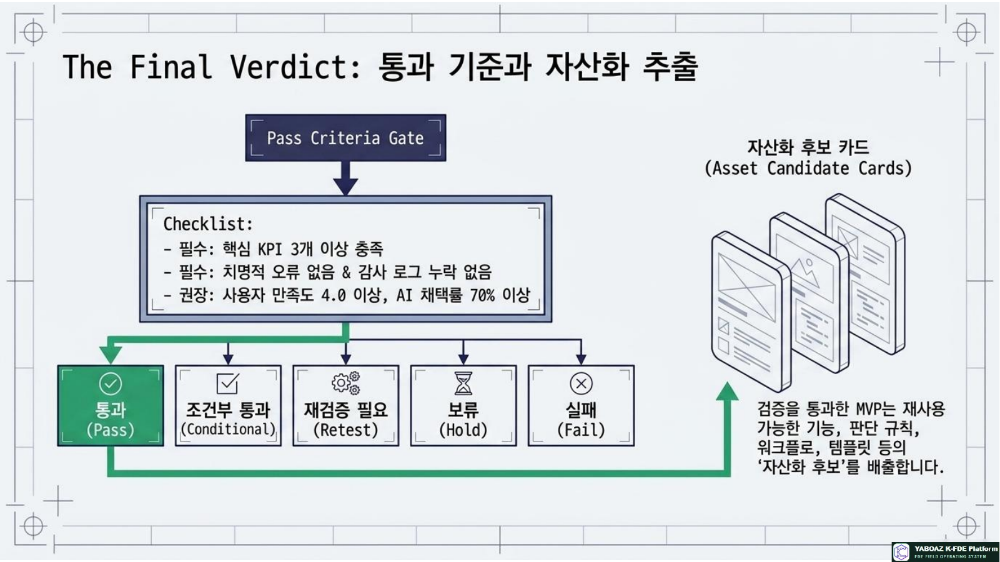
7. 피드백·개선 우선순위·판정
피드백 분류
| 분류 | 예시 |
|---|---|
| 기능·화면 | 필요 기능, 버튼, 위치 정보 표시 개선 |
| 데이터 | 누락·오류·중복·최신성 문제 |
| AI | 판단 오류·근거 부족·신뢰도 문제 |
| 워크플로·정책 | 승인·반려·예외·권한 문제 |
| 교육·자산화 | 사용 설명·다른 프로젝트 재사용 후보 |
개선 우선순위표
| 개선 항목 | 영향도 | 난이도 | 재사용성 | 결정 |
|---|---|---|---|---|
| Evidence 링크 추가 | 높음 | 낮음 | 높음 | 즉시 수정 |
| 반려 후 재검토 상태 | 높음 | 중간 | 높음 | 다음 버전 |
| KPI 자동 보고서 | 중간 | 중간 | 높음 | 2차 개발 |
| 모바일 알림 확장 | 높음 | 높음 | 중간 | 로드맵 등록 |
검증 판정 등급
통과 기준 예시
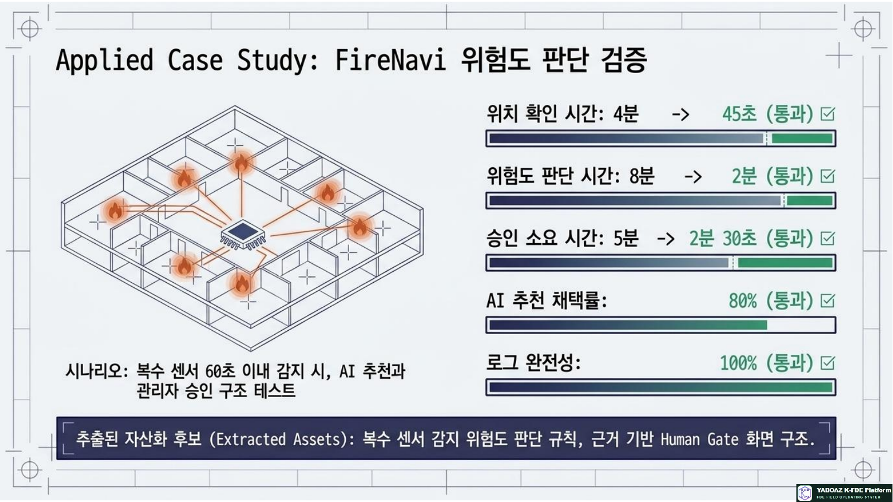
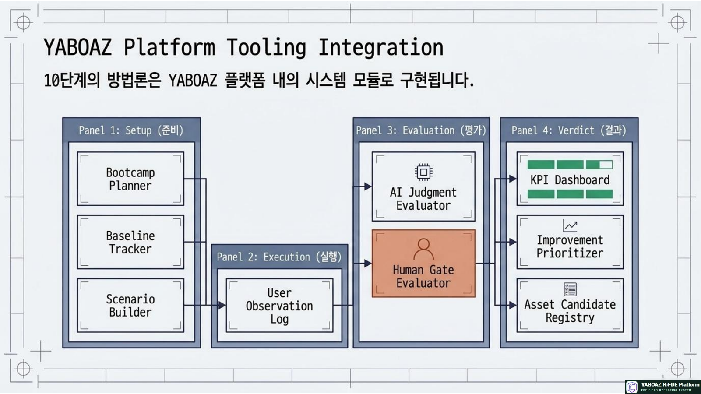
8. FireNavi Bootcamp·검증 보고·자산화
검증 대상
KPI 결과 예시
| KPI | 기존 | MVP | 결과 |
|---|---|---|---|
| 위치 확인 시간 | 4분 | 45초 | 통과 |
| 위험도 판단 시간 | 8분 | 2분 | 통과 |
| 승인 소요시간 | 5분 | 2분 30초 | 통과 |
| AI 추천 채택률 | 없음 | 80% | 통과 |
| 로그 완전성 | 낮음 | 100% | 통과 |
자산화 후보
| 후보 자산 | 재사용 내용 |
|---|---|
| 위험도 판단 규칙 | 복수 센서 감지 기반 위험도 판단 템플릿 |
| Human Gate 승인 화면 | 근거 기반 승인·반려·보류 구조 |
| 이벤트-승인-실행 로그 | 감사 가능한 실행 기록 모델 |
| KPI 측정 템플릿 | 판단시간·승인시간·채택률 측정 |
| Bootcamp 시나리오 | 재난안전 분야 반복 검증 시나리오 |
12단계 완료 체크리스트
실제 사용자·실제 시나리오·기준선·KPI를 통해 MVP를 검증된 실행 자산으로 바꾸고, 피드백과 개선 결과를 다음 프로젝트의 재사용 자산으로 축적하는 것입니다.
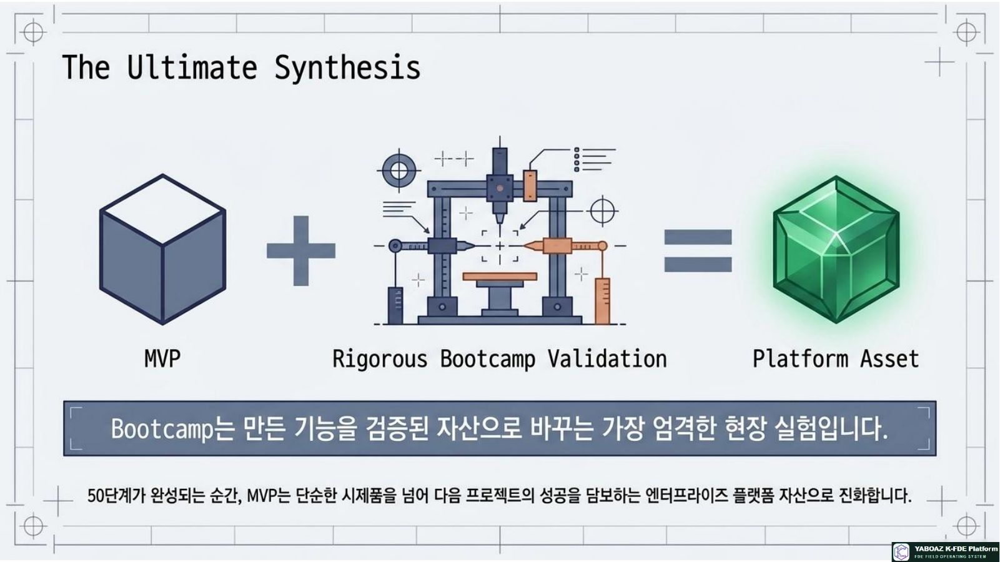